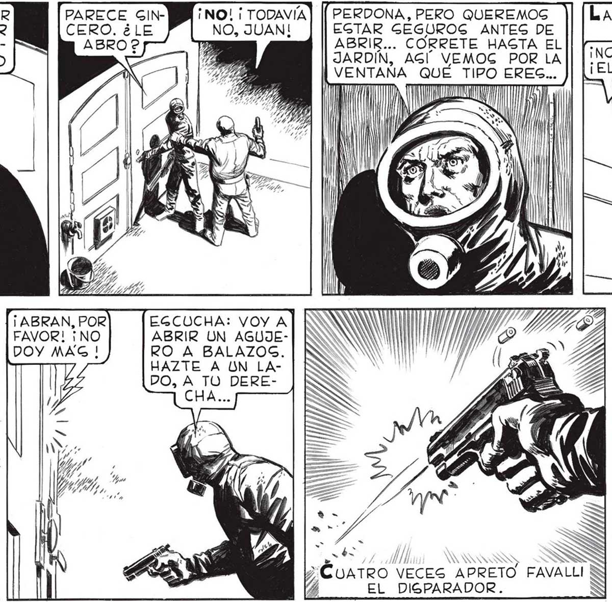

¡VOY A VER QUÉ QUIERE! ¡ UN MOMENTO, JUAN! TENEMOG QUE IR LOS DOS... ¡EGPERA QUE ME PONGA EL TRAJE AIGLANTE! ¡ME HE HECHO ON TRAJE AIGLADOR PERO EGTX MAL Y EN CUALQUIER MOMENTO ME TOCAN LOG MALDITOG COPOG! ¡AYÚDENME POR LO QUE MAG QUIERAN! NO ME GUGTA QUE NO QUIERA QUE LO VEAMOG... LE DARE UNA NUEVA CHANCE: VOY A ABRIR UN AGUJE- ES ZA RO EN LA PUERTA 7 ge S “y No se TOMO EL TRABAJO DE CONTEGTARME. Loc coLPes SIGUIERON. CUANDO FA VALLI Y YO ENTRAMOG AL GARAJE VIMOG GACUDIRSE EL PICAPORTE, LA PUERTA RETEMBLABA BAJO LOG GOLPES Y LOS GACUDONES. ¡NO! ¡ TODAVÍA NO, JUAN! EGCUCHA: VOY A ABRIR UN AGUJERO A BALAZOGS. HAZTE A UN LADO, A TO DERECHA... PARECE APURADO VAMOG A HABLARLE... POR ENTRAR / s / NSEGUIDA RETUMBO EL VOZARRON DE FAVALLI. MAS | PERDONA, PERO QUEREMOG EGTAR GEGUROG ANTES DE ABRIR... CORRETE HASTA EL JARDIN, AGI VEMOG POR LA I VENTANA QUE TIPO ERES... AMA VEZ > DA 0% ÉUATRO VECES APRETO FAVALLI A EL DIGPARADOR. : ¿ QUÉ QUIEREG? ¿ POR QUÉ LLAAPURO 2 ¡ NECEGITO AYUDA! ¡POR FAVOR! ¡DEJENME ENTRAR | CON TANTO ¡NO PUEDO MOVERME MAS! ¡EL TRAJE SE ME VA A ROMPER! Eu q AA A/A CREO QUE DEBEMOG ILABRIR, FAVA...¿ Y Sl LE PAGA ALGO? YA ESTA... PONTE DELANTE DEL AGUJERO, AGÍ TE PODEMOS VER... PERO... QUE ESPERAS ? L OTRO, POR PRIMERA VEZ,SE HABIA LLAMADO A GILENCIO... 63
